- 00 溯本求源，吃透 Docker！.md
- 01 Docker 安装：入门案例带你了解容器技术原理.md
- 02 核心概念：镜像、容器、仓库，彻底掌握 Docker 架构核心设计理念.md
- 03 镜像使用：Docker 环境下如何配置你的镜像？.md
- 04 容器操作：得心应手掌握 Docker 容器基本操作.md
- 05 仓库访问：怎样搭建属于你的私有仓库？.md
- 06 最佳实践：如何在生产中编写最优 Dockerfile？.md
- 07 Docker 安全：基于内核的弱隔离系统如何保障安全性？.md
- 08 容器监控：容器监控原理及 cAdvisor 的安装与使用.md
- 09 资源隔离：为什么构建容器需要 Namespace ？.md
- 10 资源限制：如何通过 Cgroups 机制实现资源限制？.md
- 11 组件组成：剖析 Docker 组件作用及其底层工作原理.md
- 12 网络模型：剖析 Docker 网络实现及 Libnetwork 底层原理.md
- 13 数据存储：剖析 Docker 卷与持久化数据存储的底层原理.md
- 14 文件存储驱动：AUFS 文件系统原理及生产环境的最佳配置.md
- 15 文件存储驱动：Devicemapper 文件系统原理及生产环境的最佳配置.md
- 16 文件存储驱动：OverlayFS 文件系统原理及生产环境的最佳配置.md
- 17 原理实践：自己动手使用 Golang 开发 Docker（上）.md
- 18 原理实践：自己动手使用 Golang 开发 Docker（下）.md
- 19 如何使用 Docker Compose 解决开发环境的依赖？.md
- 20 如何在生产环境中使用 Docker Swarm 调度容器？.md
- 21 如何使 Docker 和 Kubernetes 结合发挥容器的最大价值？.md
- 22 多阶级构建：Docker 下如何实现镜像多阶级构建？.md
- 23 DevOps：容器化后如何通过 DevOps 提高协作效能？.md
- 24 CICD：容器化后如何实现持续集成与交付？（上）.md
- 25 CICD：容器化后如何实现持续集成与交付？（下）.md
- 26 结束语 展望未来：Docker 的称霸之路.md
25 CICD：容器化后如何实现持续集成与交付？（下）
上一讲，我介绍了 CI 和 CD 的相关概念，并且使用 Docker+Jenkins+GitLab 搭建了我们的 CI/CD 环境，今天我们就来使用已经构建好的环境来实际构建和部署一个应用。
构建和部署一个应用的流程可以分为五部分。
- 我们首先需要配置 GitLab SSH 访问公钥，使得我们可以直接通过 SSH 拉取或推送代码到 GitLab。
- 接着将代码通过 SSH 上传到 GitLab。
- 再在 Jenkins 创建构建任务，使得 Jenkins 可以成功拉取 GitLab 的代码并进行构建。
- 然后配置代码变更自动构建流程，使得代码变更可以触发自动构建 Docker 镜像。
- 最后配置自动部署流程，镜像构建完成后自动将镜像发布到测试或生产环境。
接下来我们逐一操作。
1. 配置 GitLab SSH 访问公钥
为了能够让 Jenkins 顺利从 GitLab 拉取代码，我们需要先生成 ssh 密钥。我们可以使用 ssh-keygen 命令来生成 2048 位的 ras 密钥。在 Linux 上执行如下命令：
$ ssh-keygen -o -t rsa -b 2048 -C "[email protected]"
# 输入上面命令后系统会提示我们密钥保存的位置等信息，只需要按回车即可。
Generating public/private rsa key pair.
Enter file in which to save the key (/home/centos/.ssh/id_rsa):
Enter passphrase (empty for no passphrase):
Enter same passphrase again:
Your identification has been saved in /home/centos/.ssh/id_rsa.
Your public key has been saved in /home/centos/.ssh/id_rsa.pub.
The key fingerprint is:
SHA256:A+d0NQQrjxV2h+zR3BQIJxT23puXoLi1RiTKJm16+rg [email protected]
The key's randomart image is:
+---[RSA 2048]----+
| =XB=o+o|
| ..=B+o .|
| . + +. o |
| = B .o . |
| o S + o . |
| . * .... . +|
| = ..o +.|
| ... o.. .|
| E=. ... |
+----[SHA256]-----+
执行完上述命令后 ，$HOME/.ssh/ 目录下会自动生成两个文件：id_rsa.pub 文件为公钥文件，id_rsa 文件为私钥文件。我们可以通过 cat 命令来查看公钥文件内容：
$ cat $HOME/.ssh/id_rsa.pub
ssh-rsa AAAAB3NzaC1yc2EAAAADAQABAAABAQDljSlDNHnUr4ursYISKXK5j2mWTYnt100mvYeJCLpr6tpeSarGyr7FnTc6sLM721plU2xq0bqlFEU5/0SSvFdLTht7bcfm/Hf31EdAuIqZuy/guP06ijpidfX6lVDxLWx/sO3Wbj3t7xgj4sfCFTiv+OOFP0NxKr5wy+emojm6KIaXkhjbPeJDgph5bvluFnKAtesMUkdhceAdN9grE3nkBOnwWw6G4dCtbrKt2o9wSyzgkDwPjj2qjFhcE9571/61/Nr8v9iqSHvcb/d7WZ0Qq7a2LYds6hQkpBg2RCDDJA16fFVs8Q5eNCpDQwGG3IbhHMUwvpKDf0OYrS9iftc5 [email protected]
然后将公钥文件拷贝到 GitLab 的个人设置 -> SSH Keys 中，点击添加按钮，将我们的公钥添加到 GitLab 中。
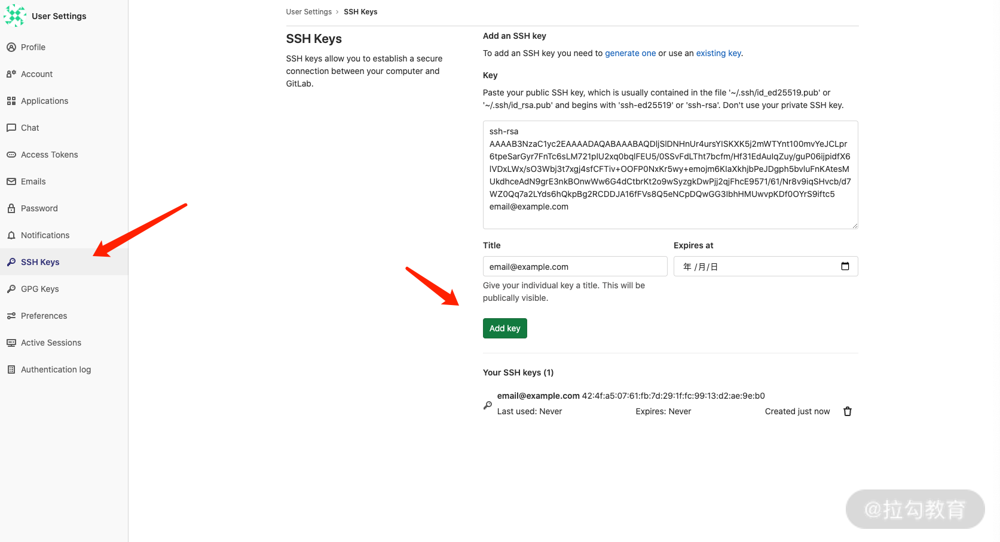
2. 上传服务代码到 GitLab
这里，我使用 Golang 编写了一个 HTTP 服务，代码如下：
package main
import (
"fmt"
"net/http"
)
func hello(w http.ResponseWriter, req *http.Request) {
fmt.Fprintf(w, "hello\n")
}
func headers(w http.ResponseWriter, req *http.Request) {
for name, headers := range req.Header {
for _, h := range headers {
fmt.Fprintf(w, "%v: %v\n", name, h)
}
}
}
func main() {
http.HandleFunc("/hello", hello)
http.HandleFunc("/headers", headers)
http.ListenAndServe(":8090", nil)
}
然后编写一个 Dockerfile，利用多阶段构建将我们的 Go 编译，并将编译后的二进制文件拷贝到 scratch（scratch 是一个空镜像，用于构建其他镜像，体积非常小）的基础镜像中。Dockerfile 的内容如下：
FROM golang:1.14 as builder
WORKDIR /go/src/github.com/wilhelmguo/devops-demo/
COPY main.go .
RUN CGO_ENABLED=0 GOOS=linux go build -o /tmp/http-server .
FROM scratch
WORKDIR /root/
COPY --from=builder /tmp/http-server .
CMD ["./http-server"]
编写完 Go HTTP 文件和 Dockerfile 文件后，代码目录内容如下：
$ ls -lh
total 24
-rw-r--r-- 1 root root 243B Nov 3 22:03 Dockerfile
-rw-r--r-- 1 root root 26B Nov 3 22:06 README.md.html
-rw-r--r-- 1 root root 441B Nov 3 22:03 main.go
源码详见这里
然后，我们在 GitLab 上创建一个 hello 项目，并将代码上传。
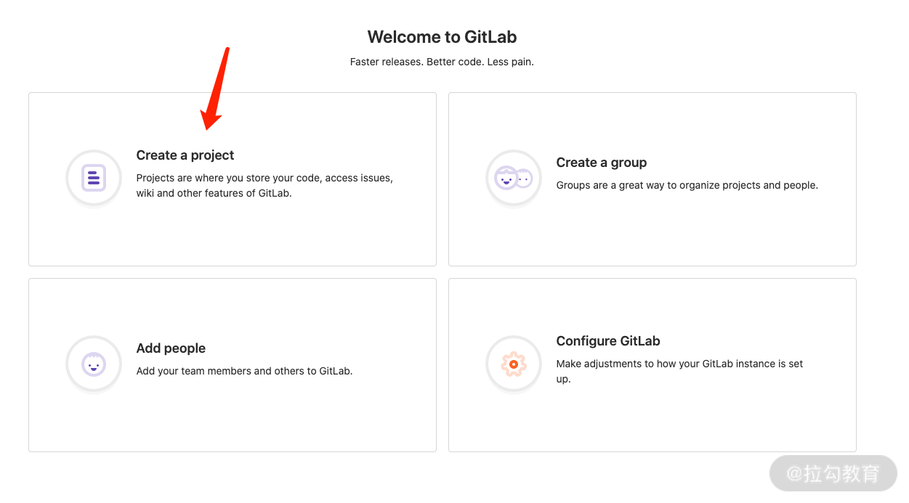

项目创建完成后，GitLab 会自动跳转到项目详情页面。
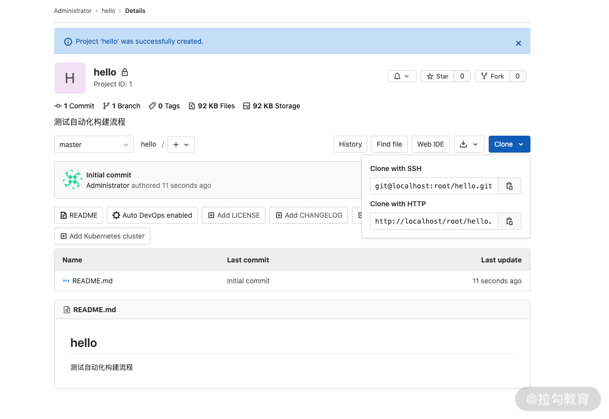
3. 创建 Jenkins 任务
在 Jenkins 中添加一个自由风格的任务。
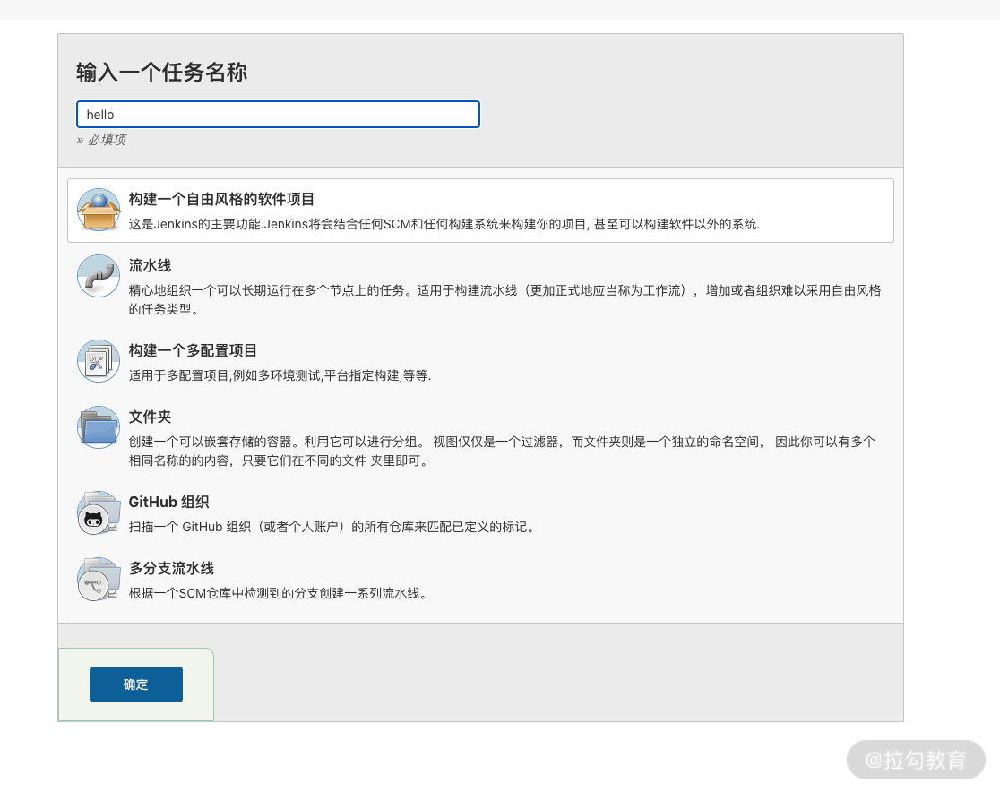
点击确定，然后到源码管理选择 Git，填写 GitLab 项目的 URL。此时 Jenkins 会提示没有访问 GitLab 的相关权限，我们需要点击添加按钮将私钥添加到 Jenkins 中用以鉴权。
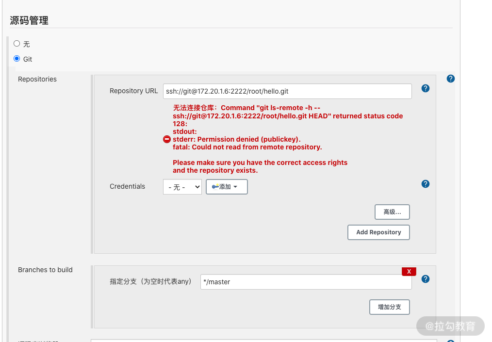
由于部署 GitLab 的宿主机 ssh 默认端口为 22，为了避免与宿主机的 ssh 端口冲突，我们的 GitLab ssh 端口配置为 2222，因此 Jenkins 连接 GitLab 的 URL 中需要包含端口号 2222， 配置格式为 ssh://[email protected]:2222/root/hello.git。
选择添加的密钥类型为 “SSH Username with private key”，Username 设置为 jenkins，然后将私钥粘贴到 Private Key 输入框中，点击添加即可。
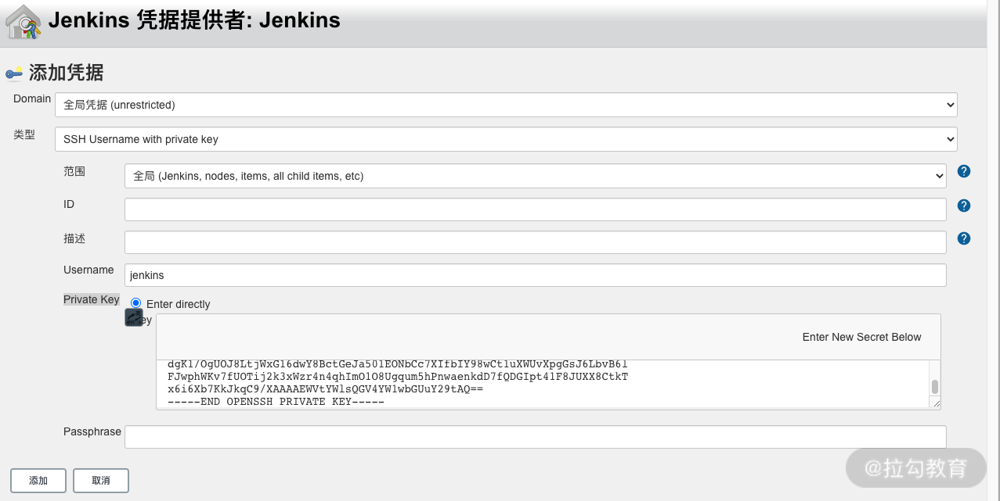
添加完成后，认证名称选择 jenkins 后，红色报错提示就会消失。这证明此时 Jenkins 和 GitLab 已经认证成功，可以成功从 GitLab 拉取代码了。
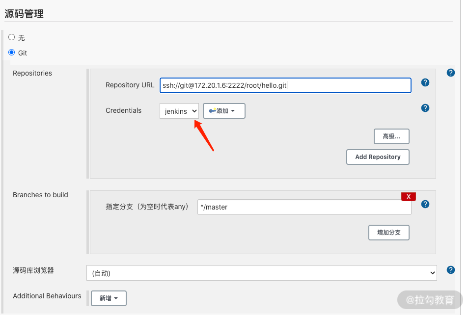
下面我们使用 shell 脚本来构建我们的应用镜像，在构建中增加一个 Shell 类型的构建步骤，并且填入以下信息，将 USER 替换为目标镜像仓库的用户名，将 PASSWORD 替换为镜像仓库的密码。
# 第一步，登录镜像仓库
$ docker login -u {USER} -p {PASSWORD}
# 第二步，使用 docker build 命令构建镜像
$ docker build -t lagoudocker/devops-demo .
# 第三步, 使用 docker push 命令推送镜像
$ docker push lagoudocker/devops-demo
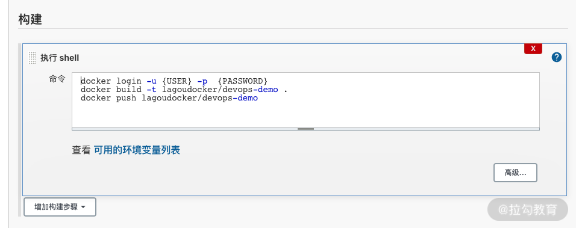
完成后点击保存，此时任务已经成功添加到 Jenkins 中。回到任务首页，点击构建按钮即可开始构建。第一次构建需要下载依赖的基础镜像，这个过程可能比较慢。构建过程中，我们也可以点击控制台查看构建输出的内容：
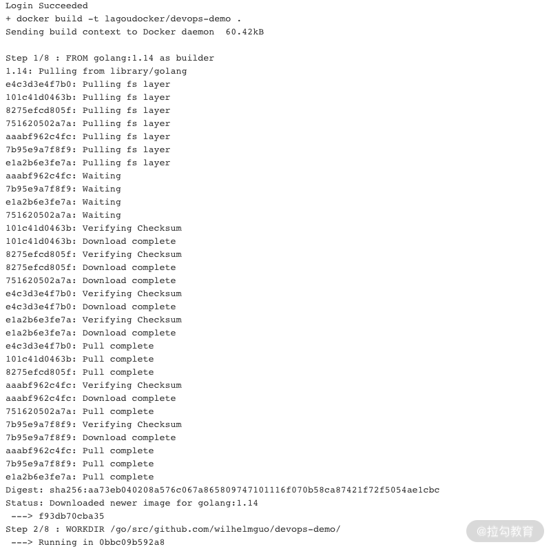
4. 配置自动构建
点击上一步创建的任务，点击配置进入任务配置界面，到构建触发器下勾选 GitLab 相关的选项，点击 Generate 按钮生成一个 GitLab 回调 Jenkins 的 token。记录下 Jenkins 的回调地址和生成的 token 信息。
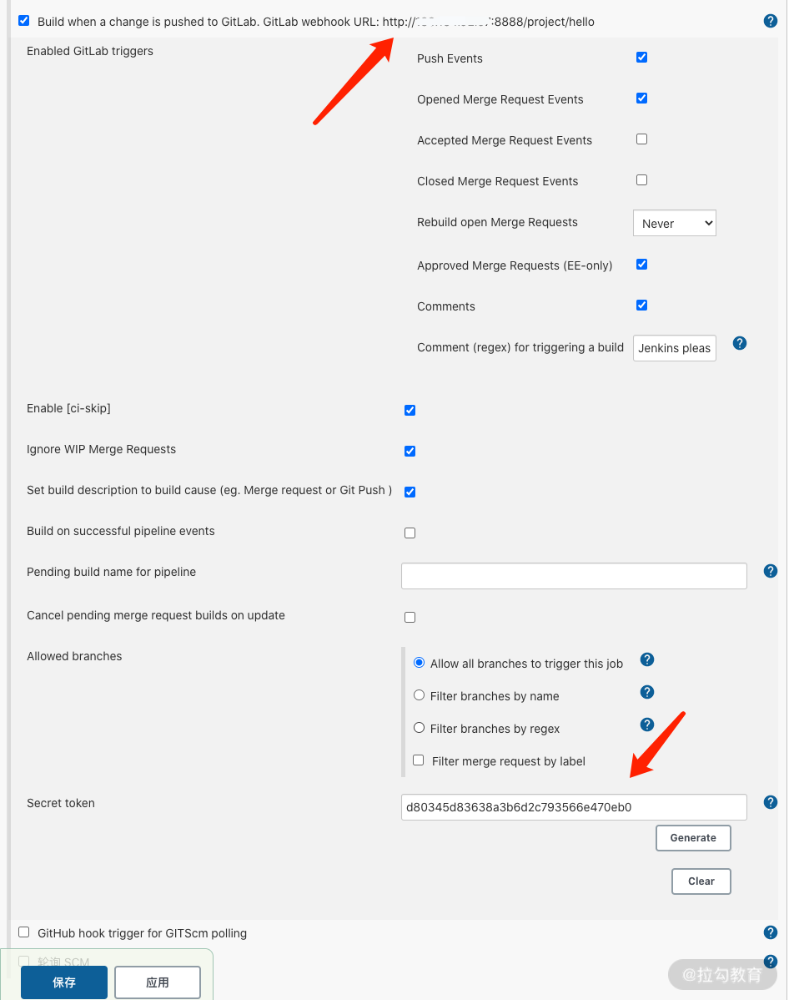
在 GitLab 项目设置中，选择 Webhooks，将 Jenkins 的回调地址和 token 信息添加到 Webhooks 的配置中，点击添加即可。
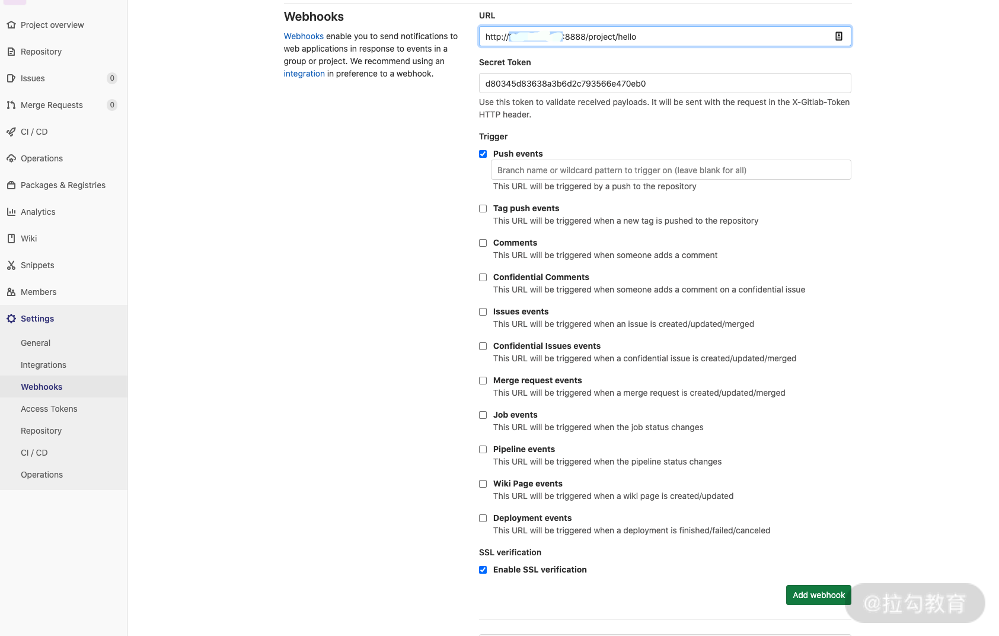
后面我们的每次提交都会触发自动构建。
为了实现根据 git 的 tag 自动构建相应版本的镜像，我们需要修改 Jenkins 构建步骤中的 shell 脚本为以下内容：
# 需要推送的镜像名称
IMAGE_NAME="lagoudocker/devops-demo"
# 获取当前构建的版本号
GIT_VERSION=`git describe --always --tag`
# 生成完整的镜像 URL 变量，用于构建和推送镜像
REPOSITORY=docker.io/${IMAGE_NAME}:${GIT_VERSION}
# 构建Docker镜像
docker build -t $REPOSITORY -f Dockerfile .
# 登录镜像仓库，username 跟 password 为目标镜像仓库的用户名和密码
docker login --username=xxxxx --password=xxxxxx docker.io
# 推送 Docker 镜像到目标镜像仓库
docker push $REPOSITORY
好了，到此我们已经完成了 GitLab -> Jenkins -> Docker 镜像仓库的自动构建和推送。当我们推送代码到 GitLab 中时，会自动触发 Webhooks，然后 GitLab 会根据配置的 Webhooks 调用 Jenkins 开始构建镜像，镜像构建完成后自动将镜像上传到我们的镜像仓库。
5. 配置自动部署
镜像构建完成后，我们还需要将镜像发布到测试或生产环境中将镜像运行起来。发布到环境的过程可以设置为自动发布，每当我们推送代码到 master 中时，即开始自动构建镜像，并将构建后的镜像发布到测试环境中。
在镜像构建过程中，实际上 Jenkins 是通过执行我们编写的 shell 脚本完成的，要想实现镜像构建完成后自动在远程服务器上运行最新的镜像，我们需要借助一个 Jenkins 插件 Publish Over SSH，这个插件可以帮助我们自动登录远程服务器，并执行一段脚本将我们的服务启动。
下面我们来实际操作下这个插件。
第一步，在 Jenkins 中安装 Publish Over SSH 插件。 在 Jenkins 系统管理，插件管理中，搜索 Publish Over SSH，然后点击安装并重启 Jenkins 服务。
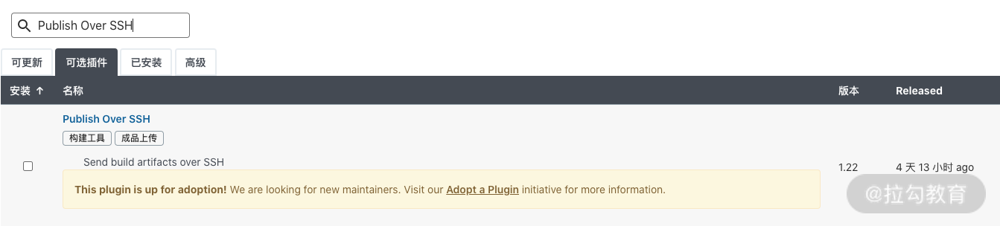
第二步，配置 Publish Over SSH 插件。 插件安装完成后，在 Jenkins 系统管理的系统设置下，找到 Publish Over SSH 功能模块，添加远程服务器节点，这里我使用密码验证的方式添加一台服务器。配置好后，我们可以使用测试按钮测试服务器是否可以正常连接，显示Success 代表服务器可以正常连接，测试连接成功后，点击保存按钮保存配置。
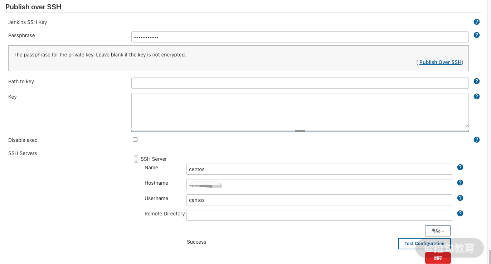
第三步，修改之前 shell 任务中脚本， 添加部署相关的内容：
# 需要推送的镜像名称
IMAGE_NAME="lagoudocker/devops-demo"
# 获取当前构建的版本号
GIT_VERSION=`git describe --always --tag`
# 生成完整的镜像 URL 变量，用于构建和推送镜像
REPOSITORY=docker.io/${IMAGE_NAME}:${GIT_VERSION}
# 构建Docker镜像
docker build -t $REPOSITORY -f Dockerfile .
# 登录镜像仓库，username 跟 password 为目标镜像仓库的用户名和密码
docker login --username={USER} --password={PASSWORD} docker.io
# 推送 Docker 镜像到目标镜像仓库
docker push $REPOSITORY
mkdir -p ./shell && echo \
"docker login --username={USER} --password={PASSWORD} \n"\
"docker pull $REPOSITORY\n"\
"docker kill hello \n"\
"docker run --rm --name=hello -p 8090:8090 -d $REPOSITORY" >> ./shell/release
我们在 docker push 命令后，增加一个输出 shell 脚本到 release 文件的命令，这个脚本会发送到远端的服务器上并执行，通过执行这个脚本文件可以在远端服务器上，拉取最新镜像并且重新启动容器。
第四步，配置远程执行。在 Jenkins 的 hello 项目中，点击配置，在执行步骤中点击添加Send files or execute commands over SSH的步骤，选择之前添加的服务器，并且按照以下内容填写相关信息。
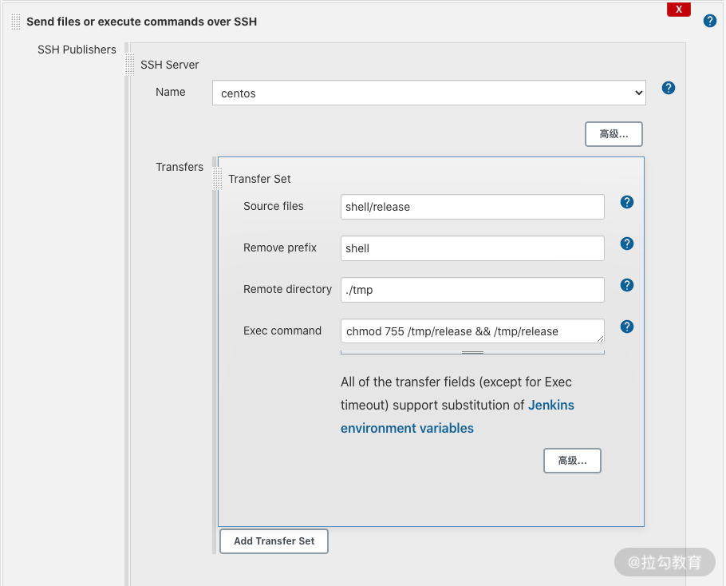
- Source file 就是我们要传递的 shell 脚本信息，这里填写我们上面生成的 shell 脚本文件即可。
- Remove prefix 是需要过滤的目录，这里我们填写 shell。
- Remote directory 为远程执行脚本的目录。
最后点击保存，保存我们的配置即可。配置完成后，我们就完成了推送代码到 GitLab，Jenkins 自动构建镜像，之后推送镜像到镜像仓库，最后自动在远程服务器上拉取并重新部署容器。
如果你是生产环境中使用的 Kubernetes 管理服务，可以在 Jenkins 中安装 Kubernetes 的插件，然后构建完成后直接发布镜像到 Kubernetes 集群中。
结语
本课时我们使用 Go 开发了一个简单的 HTTP 服务，并将代码托管在了 GitLab 中。然后通过配置 GitLab 和 Jenkins 的相互调用，实现了推送代码到 GitLab 代码仓库自动触发构建镜像并将镜像推送到远程镜像仓库中，最后将最新版本镜像发布到远程服务器上。
DevOps 是一个非常棒的指导思想，而 CI/CD 是整个 DevOps 流程中最重要的部分，目前 CI/CD 的市场已经非常成熟，CI/CD 的工具链也非常完善，因此，无论是小团队还是大团队，都有必要去学习和掌握 CI/CD，以便帮助我们改善团队的效能，一切可以自动化的流程，都应该尽量避免人工参与。
那么，你知道如何使用 Jenkins 将构建后的镜像发布到 Kubernetes 中吗?
© 2019 - 2023 Liangliang Lee. Powered by gin and hexo-theme-book.